ภาพรวม (Overview)
การออกแบบ UI/UX ของเกม Missturer
การออกแบบ UI/UX ของเกม Missturer ที่ผมวางแผนโดยเน้นไปที่ความสะดวกในการใช้งาน UI การใช้สีที่มี Contrast ชัดเจน Project นี้ผมได้ออกแบบทุกอย่าง Art Style, UI/UX, Graphic Design
ขั้นตอนการพัฒนา (Development Stages)
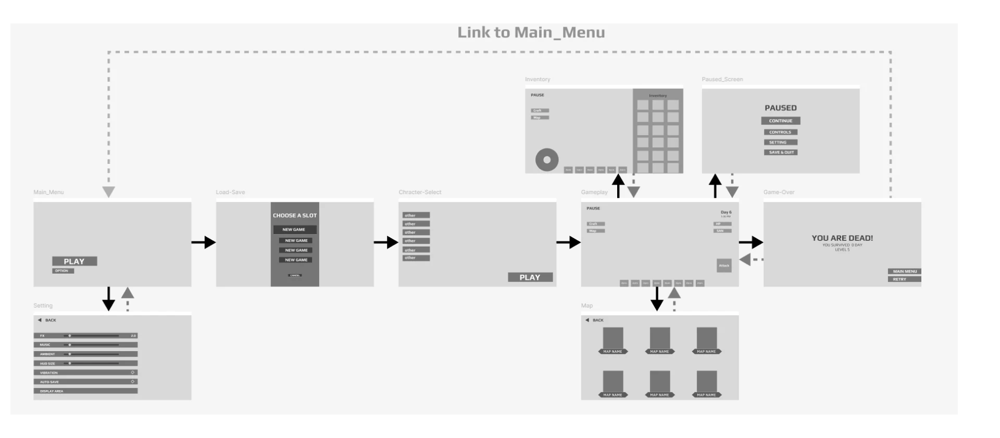
Wireframe
Wireframe
เริ่มจากการวางแผนโครงสร้างของเกมว่าควรมีหน้าอะไรบ้างและทำงานเชื่อมต่อกันอย่างไร หลังจากนั้นจึงจัด Layout อย่างง่ายโดยใช้หลักการ Visual Hierarchy เพื่อจัดวางองค์ประกอบต่างๆ และใช้ 4-Grid System ในการทำระยะห่างระหว่าง UI
User Flow
ออกแบบ User Flow เพื่อจำลองประสบการณ์ผู้เล่นในเกมว่าจะพบเจออะไรบ้าง เราจะออกแบบประสบการณ์เพื่อให้ผู้เล่นสามารถเข้าใจและเล่นเกมได้อย่างง่ายดาย หลังจากออกแบบ User Flow แล้วจึงออกแบบ UI ให้เหมาะสมกับภาพและ Flow ที่เราวางแผนเพื่อสร้างประสบการณ์ที่ดี
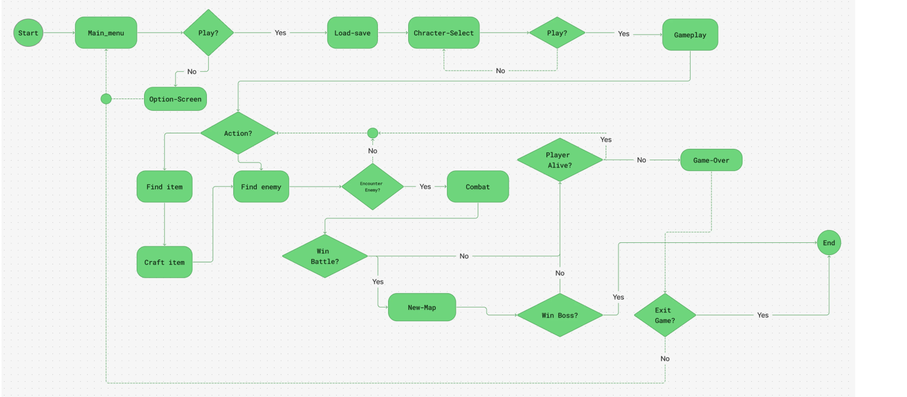
User Flow
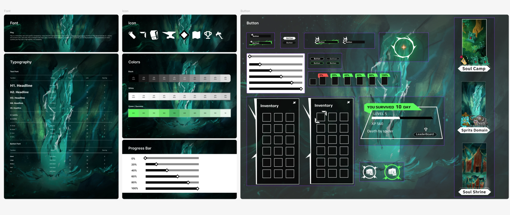
Design System
Design System
คือการสร้างระบบที่ทำให้งานออกแบบมีทิศทางเดียวกัน หรือเป็นแนวทางที่ใช้ในการออกแบบ UI ที่มีรูปแบบสอดคล้องกัน ไอเดียในการออกแบบของผมคือความเรียบง่ายของ UI, Font, สีที่มี Contrast สูง เช่น สีขาว สีดำ และสีเขียว เพื่อให้ผู้เล่นสามารถเข้าใจและเล่นเกมได้อย่างสนุก
การออกแบบ UI (UI Design)
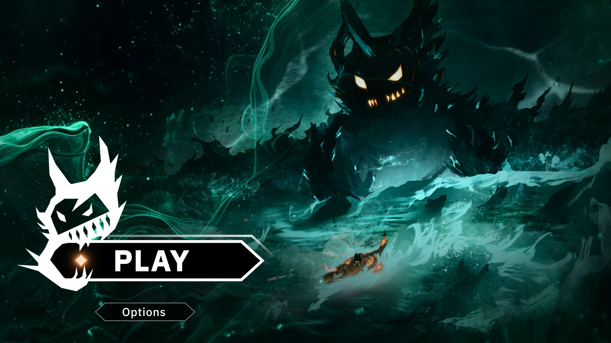
Title Screen

Load Save Screen
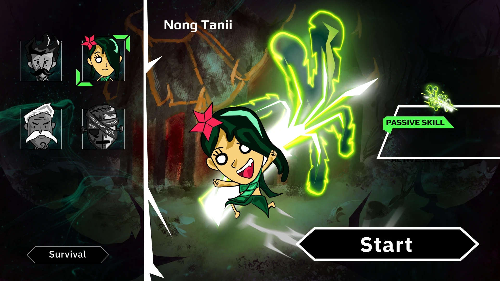
Character Select
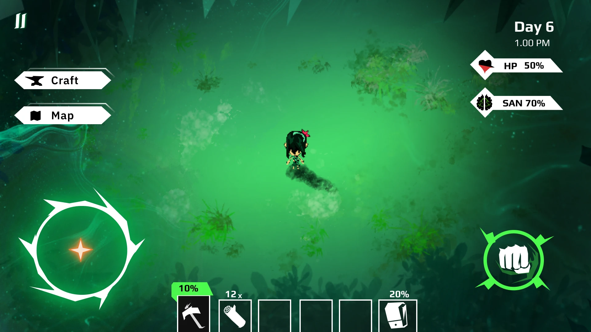
Game Play Screen
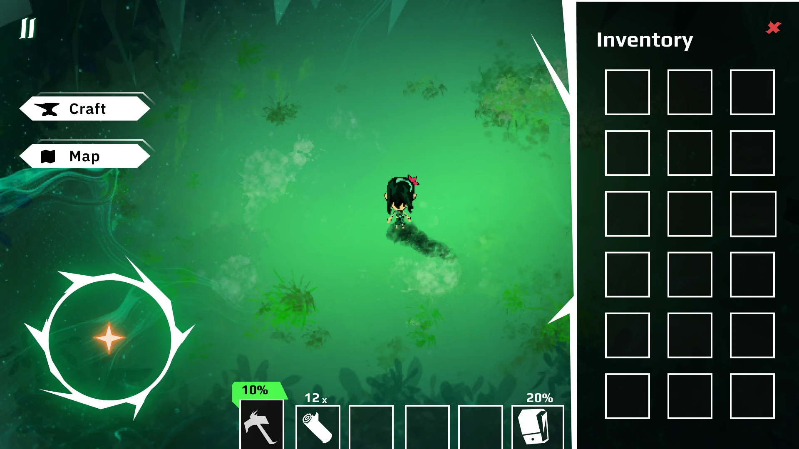
Inventory Screen
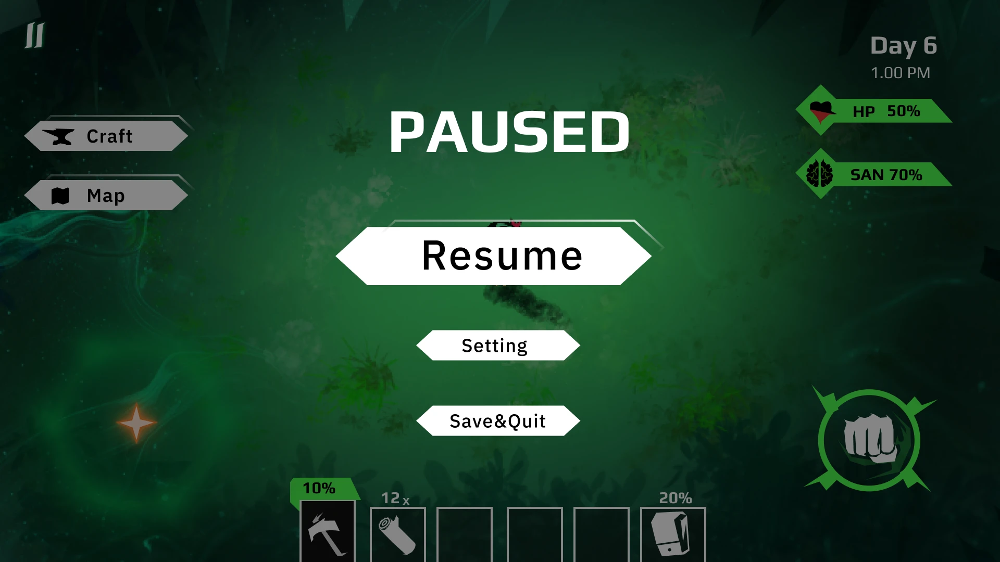
Pause Screen
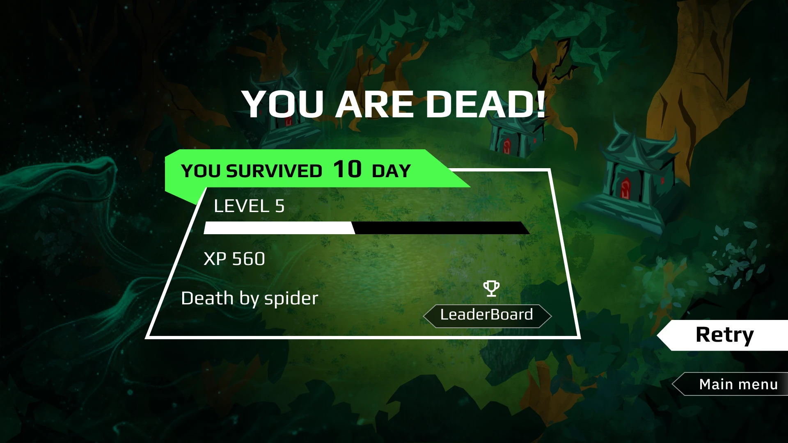
Game-Over Screen
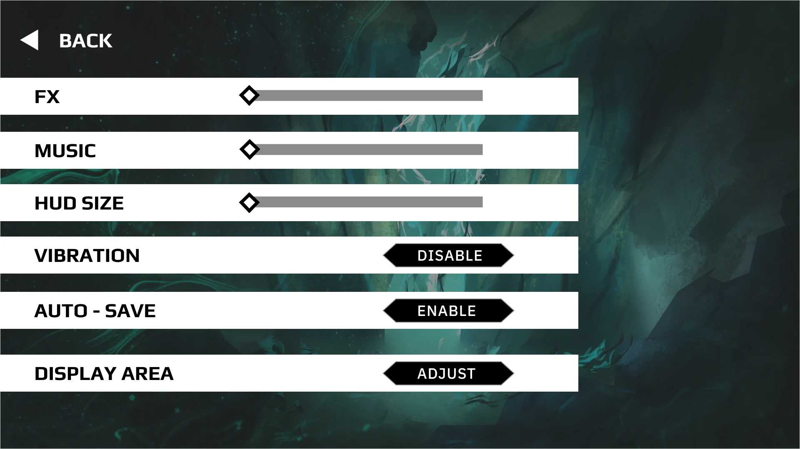
Setting Screen
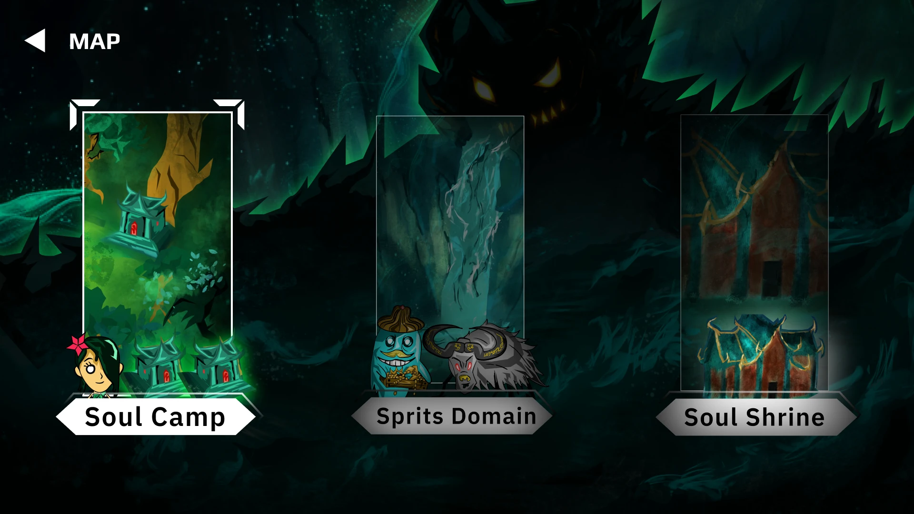